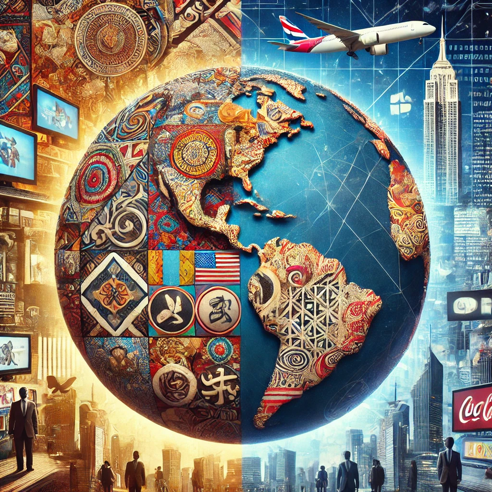

The global shift towards westernized ideals has reshaped cultural identities, social norms, and economic structures across continents in profound and often irreversible ways. This transformation, largely driven by globalization, technological interconnectedness, and the dominance of Western media, has led to the widespread adoption of Western lifestyles, languages, and consumer habits in regions with long-standing and diverse traditions. English has become the lingua franca of business, science, and education, while Western standards of beauty, success, and governance increasingly influence how societies define themselves and aspire to evolve. Popular culture—through Hollywood, fashion, social media, and music—acts as a vehicle for these ideals, creating a shared but often Western-centric narrative of modernity. While this shift has promoted global connectivity, economic growth, and cross-cultural exchange, it has also sparked ongoing debates about cultural homogenization, neocolonialism, and the erosion of indigenous identities and values. Many communities find themselves torn between preserving traditional customs and adapting to a globalized world where Western ideals are often seen as the benchmark for progress. This tension continues to shape political discourse, generational attitudes, and the future of cultural diversity worldwide.
